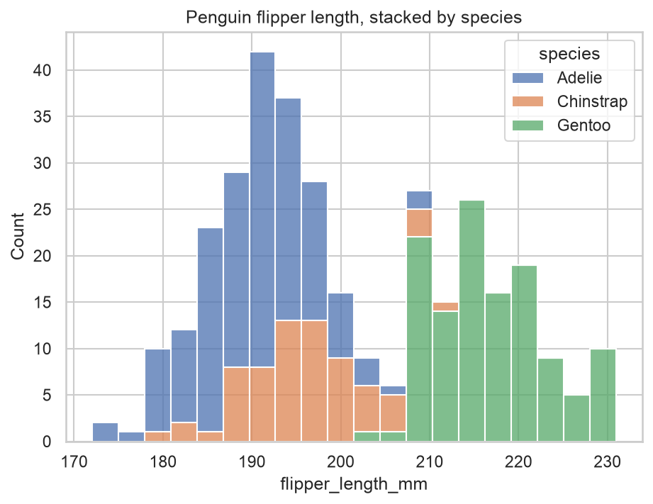
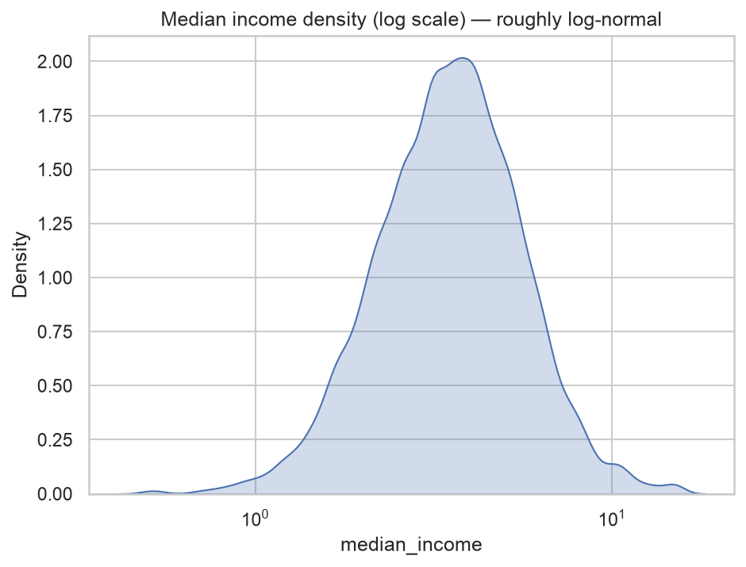
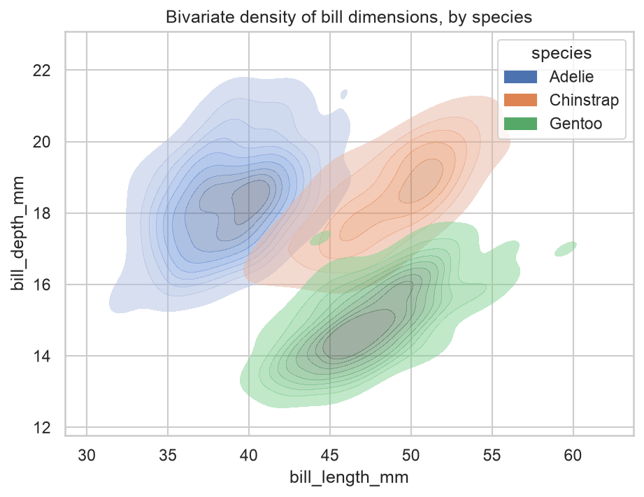
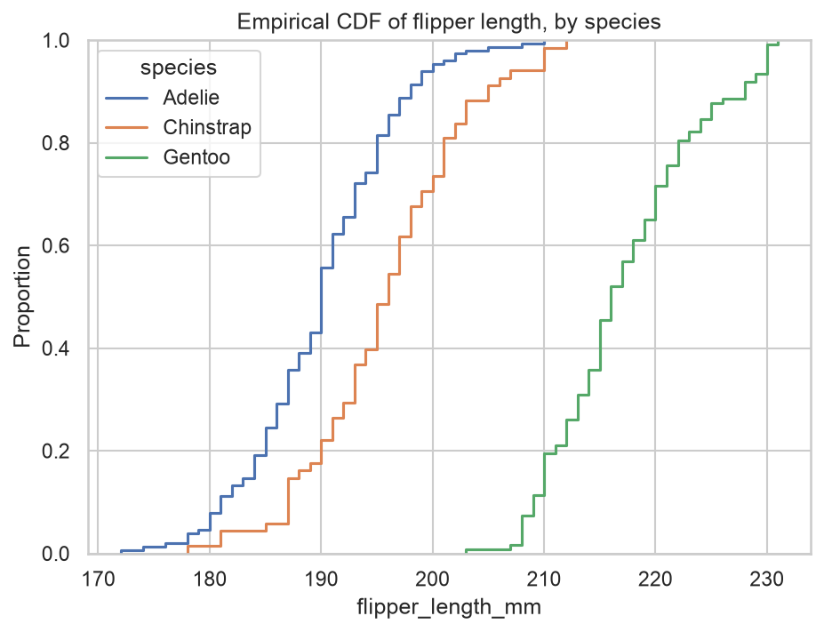
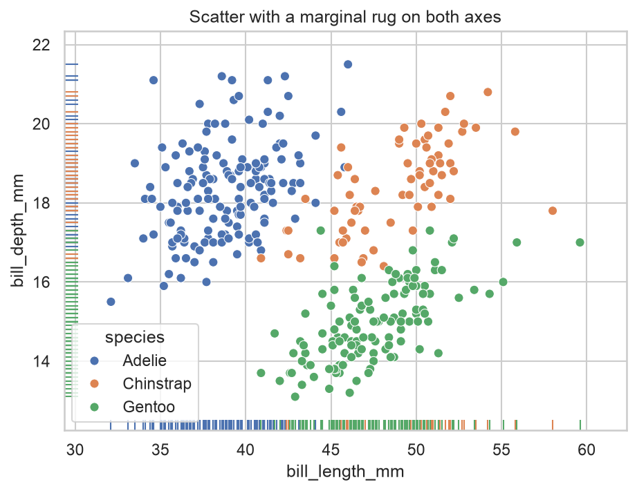
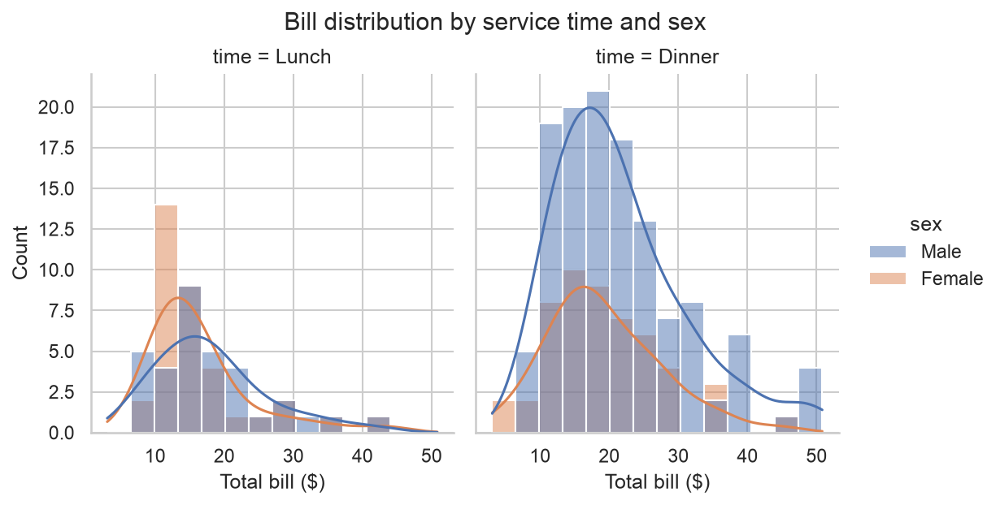

Home › 2 · Distributions
2 · Distributions
what is the shape, centre and spread of a single variable — and how does that differ from group to group?
| Function | Level | Dataset | In one line |
|---|---|---|---|
histplot | axes | penguins | binned counts: the classic histogram |
kdeplot | axes | penguins / california_housing | a smooth density estimate (1-D or 2-D) |
ecdfplot | axes | penguins | the empirical cumulative distribution — no bins, no smoothing |
rugplot | axes | penguins | tick marks for individual observations, layered under another plot |
displot | figure | tips | any of the above, faceted across subsets |
one minimal, idiomatic example per function (kdeplot gets a 1-D and a 2-D example). Each ends by saving a PNG to images/.
Imports for this notebook
import matplotlib.pyplot as plt
import pandas as pd
import seaborn as sns
from load_data import load_data
sns.set_theme(style="whitegrid")
penguins = sns.load_dataset("penguins")
tips = sns.load_dataset("tips")
housing = load_data("california_housing")
histplot
Axes-level. Splits the range into bins and counts how many observations land in each — the default first look at a distribution's shape.

sns.histplot(
data=penguins,
x="flipper_length_mm",
hue="species", multiple="stack",
bins=20, ax=ax,
)
ax.set_title("Penguin flipper length, stacked by species")
Best for
- Showing where the mass of a single variable sits: centre, spread, skew, multiple modes, gaps.
bins/binwidthset the resolution — too few hides structure, too many shows noise.- Comparing groups with
hue+multiple=:"layer"(translucent overlay),"stack"(as here),"dodge","fill"(100 % composition). stat="density"or"probability"when groups differ in size;element="step"when several curves overlap.- Not for tiny samples, where the bin choice drives the picture — use
ecdfplotor astripplotinstead.
kdeplot
Axes-level. Places a smooth "bump" on each observation and adds them up into a
continuous density curve — no bin edges. Pass y as well and it becomes a 2-D
density with contours.


# 1-D: one skewed variable, on a log scale
sns.kdeplot(data=housing, x="median_income", log_scale=True, fill=True, ax=ax)
ax.set_title("Median income density (log scale) — roughly log-normal")
# 2-D: joint density of two variables, one filled set of contours per group
sns.kdeplot(
data=penguins,
x="bill_length_mm", y="bill_depth_mm",
hue="species", fill=True, alpha=0.5,
ax=ax,
)
ax.set_title("Bivariate density of bill dimensions, by species")
Best for
- A smooth stand-in for the histogram that is easy to overlay for several groups.
- 2-D (
xandy): contours show where a joint distribution concentrates without the clutter of a scatter. bw_adjusttunes the smoothing;log_scale=Truehandles skew;common_norm=Falsemakes each group's curve integrate to 1 on its own.- Not for bounded or spiky data — the smoothing bleeds past hard limits (density below zero for a non-negative quantity) and can invent or flatten modes. Fall back to
histplot/ecdfplotthen.
ecdfplot
Axes-level. For every value on the x-axis, plots the fraction of observations less than or equal to it. No bins, no smoothing, nothing to tune.

sns.ecdfplot(data=penguins, x="flipper_length_mm", hue="species", ax=ax)
ax.set_title("Empirical CDF of flipper length, by species")
Best for
- The least distorting view of a distribution — every observation is drawn exactly, so it is reliable even for small samples.
- Reading percentiles straight off the y-axis (0.5 → median), and comparing groups by the gap between curves.
- Spotting where two groups diverge: parallel curves = a shift, crossing curves = a difference in spread.
- Not the most intuitive for an audience raised on histograms — peaks and gaps appear as changes in slope, not bumps.
rugplot
Axes-level. Draws one short tick per observation along an axis. Almost always a layer under another plot rather than a chart on its own.

sns.scatterplot(
data=penguins, x="bill_length_mm", y="bill_depth_mm",
hue="species", s=40, ax=ax,
)
sns.rugplot(
data=penguins, x="bill_length_mm", y="bill_depth_mm",
hue="species", legend=False, ax=ax,
)
ax.set_title("Scatter with a marginal rug on both axes")
Best for
- Putting the raw observations back under a summary (a KDE, a regression, a scatter) so the reader sees sample size and clustering.
- A lightweight marginal that needs no extra panel.
- Not a standalone chart, and useless once N is large — the ticks merge into a solid bar. Use
alpha=,height=, or a real marginal histogram (jointplot,displot(..., rug=True)) instead.
displot
Figure-level. The faceting front-end to the whole family: kind="hist"
(default), "kde" or "ecdf", plus row / col and a managed legend.

g = sns.displot(
data=tips,
x="total_bill",
col="time", hue="sex",
kind="hist", kde=True,
height=4, aspect=0.9,
)
g.set_axis_labels("Total bill ($)", "Count")
g.figure.suptitle("Bill distribution by service time and sex", y=1.03)
Best for
- "How does this distribution change across subgroups?" —
row/colsplit the data into a grid, one distribution per panel. - Switching representation without switching function:
kind="hist" | "kde" | "ecdf", withkde=True/rug=Trueto layer. - Figure-level housekeeping: shared axes, one legend, consistent binning across panels.
- Not for placing a distribution on a specific
Axesin a hand-built figure — callhistplot/kdeplot/ecdfplotdirectly.